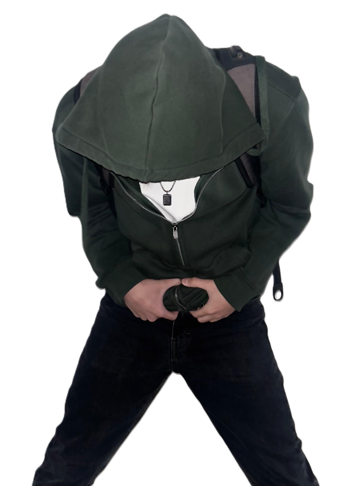

MY NAME IS
BOLAT ASPANDIYAR
CREATIVE / MEDIA / PRODUCTION / DESIGN

I'm a creative specialist based in Astana, working across media, design, production, and film.
Since the age of 16, I've been professionally involved in visual creation, including video editing, 3D, design, shooting, motion graphics, and SMM.
I've worked with clients from Kazakhstan, Turkey, the UAE, and Russia, taking part in both commercial and creative projects - from branding and advertising to on-set work in film production.
My experience includes working as a photo studio administrator, a project manager assistant, completing an SMM internship, covering IEF 2024–2025 international exhibitions, and developing in the film industry - from acting training to working with the AMS department on set.
Currently, I work as a freelancer, build my personal brand, and combine my skills across multiple creative disciplines.
[RED ME] MY LIFE MY THOUGHTS MY NOTES...
WORK EXPERIENCE
WE BRAND
Work in one of Astana's leading photo studios. Light setup, location preparation, participation in commercial shoots, development of studio's visual style.
Kaz Invest Club
Design content, negotiations, market analysis, video editing, creation of business cards and presentations, work with printing, budgeting in Excel.
IEF (International Exhibitions)
Creation of social media content, event coverage, work with large volumes of media in tight deadlines.
Film Industry
Training at PVE, filming in movies and short films. Work as an operator on a project that made it to the shortlist and received Sony support. Assisting the AMS department on set.
Freelance / Personal Brand
Work with clients from Kazakhstan, Turkey, UAE and Russia. Projects in editing, 3D visualization, design, photography and advertising. Development and launch of own author's daily planner.
HARD SKILLS
Video & Motion Design
Video editing for ads, YouTube, and social media
Motion design and animation (After Effects)
Cinematic framing and rhythm-based editing
Color grading and LUTs
Motion tracking and basic VFX
3D & Visualization
3D modeling, visualization, and texturing (Blender)
Integration of 3D graphics with live footage
PBR texturing and material creation
Scene optimization and render setup
Design & Branding
Vector design, logos, and illustrations
Business cards, menus, presentations, brochures
Covers and brand materials
Print-ready layouts (prepress)
Moodboards and visual brand concepts
Photography & Studio
Studio and event photography
Lighting setup and location preparation
Studio management and equipment handling
SMM & Digital
Social media management and content planning
Content creation, retouching, and stories
Mini-branding and promotion for small businesses
Website creation and web design (Figma, Tilda, basic WordPress/Wix)
Production & Management
Managing extras and working with AMS department on set
Time management and team coordination
Handling contracts, budgets, and reports
Quality control of projects and processes
Languages & Tools
Russian, Kazakh, English, Chinese
After Effects, Blender, Illustrator, InDesign, DaVinci Resolve, Figma, TouchDesigner, Photoshop
SOFT SKILLS
Communication & Teamwork
Quickly build rapport with team members and clients
Mentorship and support for junior colleagues
Empathy and accurate reading of emotions
Client-oriented and clear communicator
Organization & Adaptability
Time management and multitasking
Highly organized and disciplined
Adaptable to new environments and projects
Calm under pressure
Creative Thinking & Problem Solving
Idea generation from scratch
Conceptual thinking and strong visual sense
Ability to work without strict briefs
Solving tasks under budget or time constraints
Personal & Professional Growth
Self-discipline and responsibility
Initiative and constant self-improvement
Presentation and public speaking skills
Understanding human psychology and project dynamics